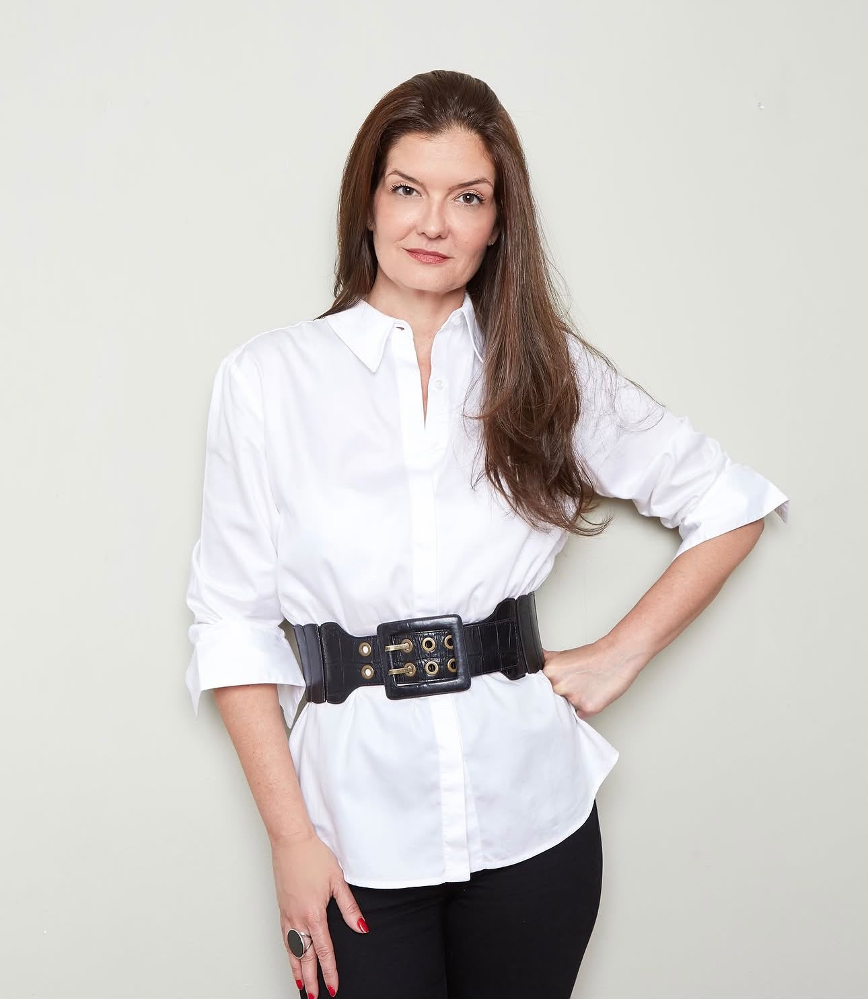

Sobre

Roberta Ristow é consultora de arte e jornalista baseada em Lisboa, atuando entre o Brasil e a Europa. Especializou-se em Gestão de Arte no Sotheby’s Institute of Art, em Londres, onde viveu por dois anos.
Sua atuação profissional abrange gestão cultural, comunicação estratégica e consultoria em arte. Colabora com instituições, colecionadores e artistas em exposições, iniciativas culturais e projetos editoriais que conectam arte, educação e engajamento público.
Desde 2020, Roberta é Diretora Institucional da Casa da Escada Colorida, um espaço de arte independente e sem fins lucrativos no Rio de Janeiro, dedicado à pesquisa e experimentação artística. Como jornalista, colabora com a Vogue Brasil desde 2017, escrevendo sobre arte contemporânea e cultura.
Anteriormente, liderou o departamento de Branded Content da Editora Globo / Grupo Globo por nove anos, desenvolvendo projetos multiplataforma para mais de 35 marcas internacionais e trabalhando em estreita colaboração com a TV Globo e a Globo Condé Nast.
Ela acredita, como disse certa vez Louise Bourgeois, que “a arte é uma garantia de sanidade” — e isso permanece central em sua prática profissional.